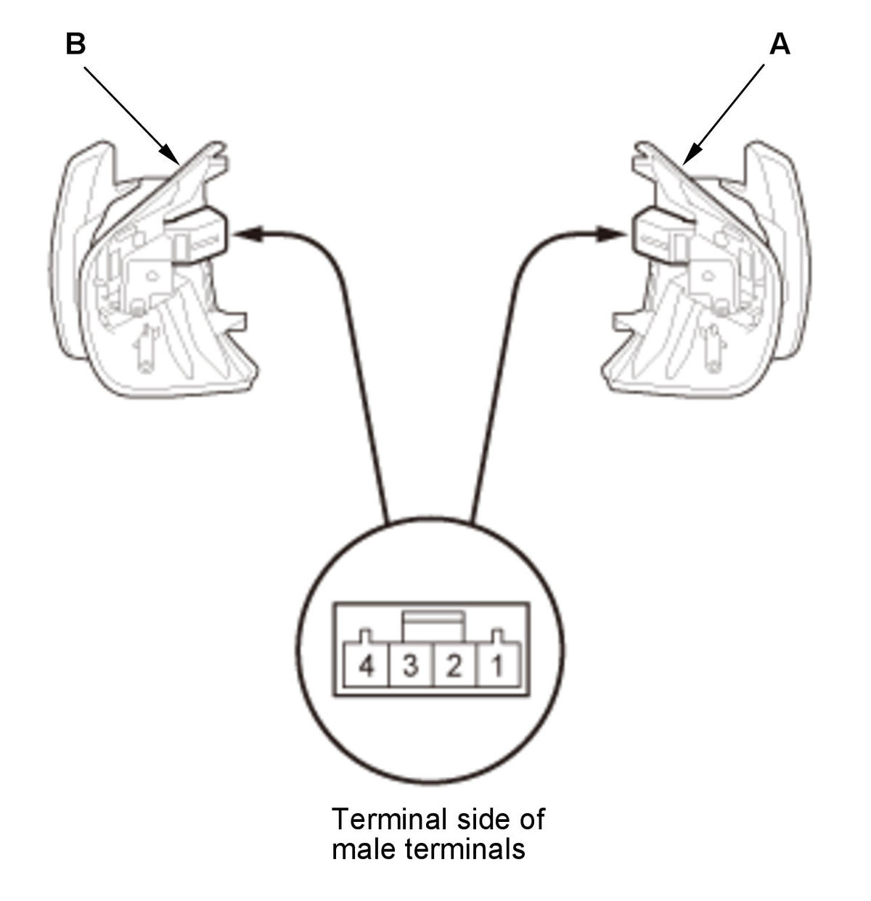
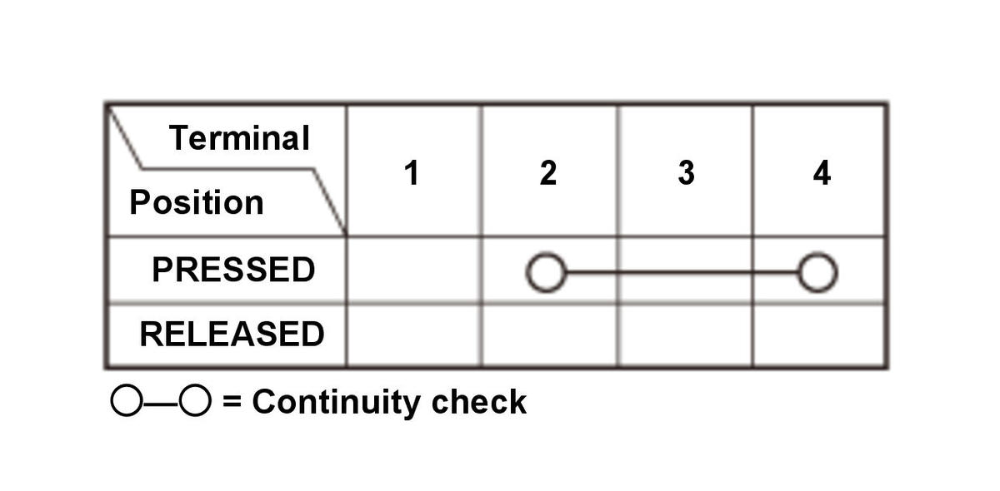
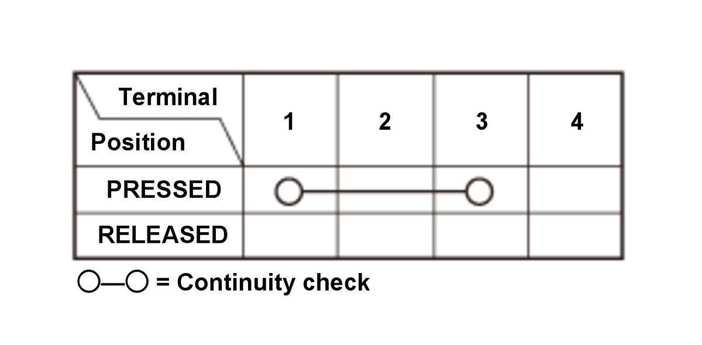

Paddle Shifter Test (L15B7/L15BA/L15BY (CVT)): Test
SRS components are located in this area. Review the SRS component locations and the precautions and procedures before doing repair or service.
- Paddle Shifter - Remove
- Paddle Shifter - Test



Courtesy of HONDA, U.S.A., INC.HONDA, U.S.A., INC.HONDA, U.S.A., INC.
Paddle Shifter + (Upshift Switch)Paddle Shifter - (Downshift Switch)
1. Check the paddle shifter + (upshift switch) (A) and the paddle shifter - (downshift switch) (B) according to the table. 2. If the result is not as specified, replace the paddle shifter + (upshift switch) and/or the paddle shifter - (downshift switch)
.
- All Removed Parts - Install
1. Install the parts in the reverse order of removal.